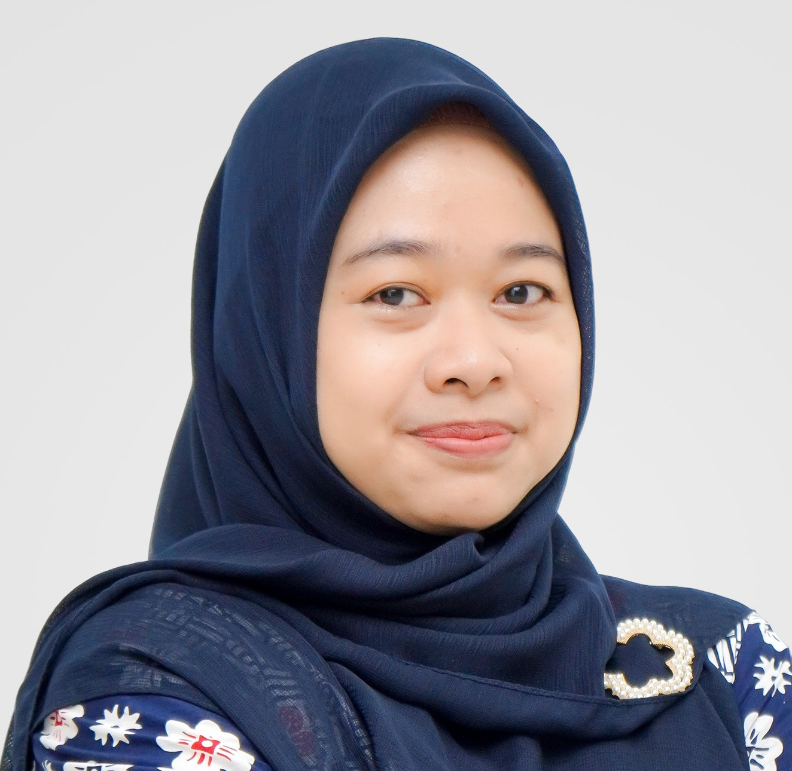

Lecturer at Department of Management & Public Policy, Universitas Gadjah Mada, Yogyakarta, Indonesia.
Previously lecturer at Information Systems, Universitas Telkom and product designer at Sale Stock Indonesia. MSc in Human-Computer Interaction, Université Paris-Saclay.

News